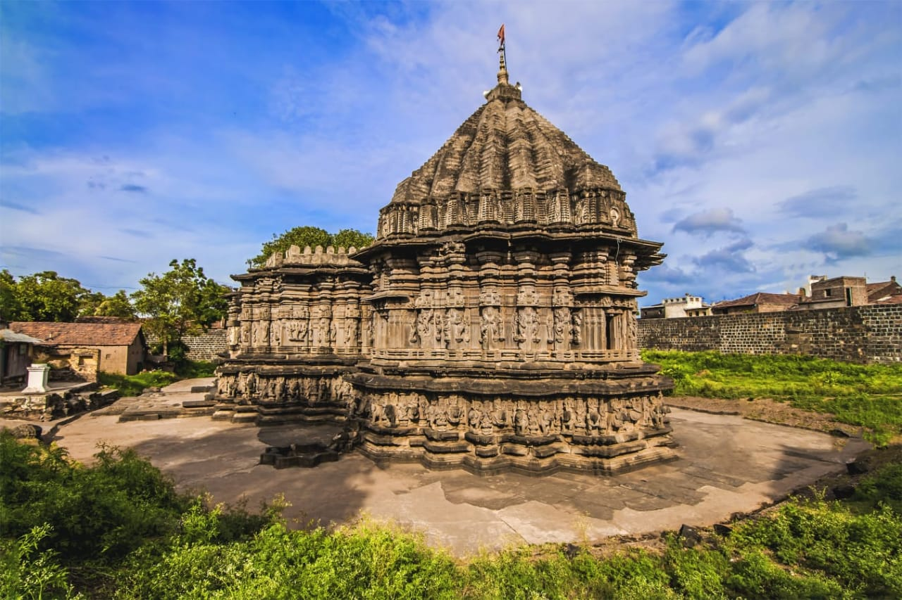

Panhala Fort
Panhala Fort, Kolhapur Overview
The Panhala Fort lies 20 km away from the main city of Kolhapur, situated at its north-west. This
fort holds its position amongst the most massive location in the country and is the largest one in
the Deccan region. It was built in a strategic position where a major trade route ran within
Maharashtra from Bijapur to the coasts of Arabian Sea. This place is not only a must-visit for the
people who love exploring historic locations but also for those who love to trek.


Shri Chh Shahu Museum
The New Palace located on the Bahvani Mandap-Kasaba Bavda Road was constructed in 1877-84 and has
been the residence of Chatrapati Shahu Maharaj. The ground floor of the palace is converted into a
museum that houses artifacts belonging to those times when the king ruled and his own possessions.
The beautiful palace is built in black polished stone and is an marvelous architectural feat to have
been accomplished in that period.

Dajipur Wildlife Sanctuary
The former hunting grounds of the Maharaja of Kolhapur, Dajipur Wildlife Sanctuary was declared as a
wildlife sanctuary in 1985. Also known as Bison Sanctuary, the place is popular for Indian Bison or
Gaurs. Besides, one can also spot leopards, tigers, sloth bears etc. Set amidst verdant forests, the
sanctuary makes for a perfect getaway from the city.

Gaganbawada
Located at a distance of 55 kms from Kolhapur, Gaganbawada is a town on the Western Ghats or the
Sahyadris. The hilly town is undeveloped and is mostly famous for Gagangad Fort, Karul Ghat and
Bhuibavda Ghat situated in the area. The town also has several temples, Lakshmapur Dam and Pandav
caves; and is shot in many Bollywood movies.

Ramtitrth Waterfall
Gushing down on the banks of River Hiranyakeshi in Ajara Taluka in Kolhapur, Ramtirth Waterfall is a
natural waterfall popular for its unmatched serenity and beautiful locales. The spot is mostly used
for day picnics and to unmind from the hustle-bustle of the city. The area also has several temples
which are thronged by pilgrims at all times.

Sagareshwar Deer Sanctuary


Sagareshwar Wildlife Sanctuary is a unique protected area in Kolhapur
district which is a man-made forest. Sprawling over an area of around 11 square kms, the wildlife is
also artificially introduced in the arena. The sanctuary boasts of a rich flora and fauna and is a
popular tourism centre in Maharashtra.

Kopeshwar Temple
Located in Khidrapur in Kolhapur district at the junction of Maharashtra
and Karnataka, Kopeshwar Temple is dedicated to Lord Shiva. Built on the banks of River Krishna, the
shrine boasts of a beautiful architecture with various intricate carvings on the interior and
exterior walls. Besides, it also has idols of Lord Shiva, Vishnu, Brahma among others.

Vishalgad
Vishalgad is another town in the Kolhapur district in Maharashtra which has a historic significance.
The town is lately popular for housing and age-old ancient fort known as Vishalgad Fort which is a
popular seat of tourism in the area.

Rankala Lake
The Rankala Lake is a very famous tourist attraction for people from all
over the world. Marked by the natural beauty and peaceful environment it provides, it sure does
become one of the must-visits on everyone's list. The lake was constructed by Shri Chhatrapati Shahu
Maharaj, the then king of Kolhapur. Rajgath and Marathghat are the two ghats that the lake has. The
lake covers an area of as large as 107 hectares. The lake is generally visited during the evening
time.